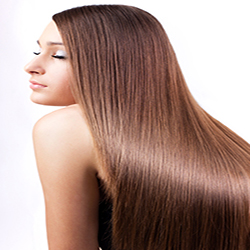
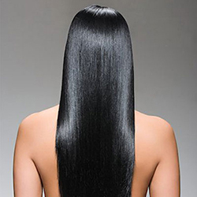

Glossy n silky hair


Do!
1. Always wash your hair with cool or cold water instead of hot water.
2. Use a shampoo most suited to your hair type, that is, depending on whether it is oily or dry.
3. Use a conditioner after a shampoo even if your hair is prone to oiliness.
4. If you need to use a hair dryer to style your hair, use moderate heat and stop when there is still some moisture in the hair. Very hot hair dryers used very frequently make the hair dry and brittle, resulting in a loss of shine and gloss.
5. Use a natural bristle comb or brush to smoothen hair texture.
6. Cutting back on alcohol, smoking and coffee will improve hair texture.
7. What you eat is very important as the shine and gloss depends on a healthy scalp. Including lots of fruits and vegetables in the diet is a good idea. Liver is a very good source of zinc, which is good for hair. Vegetarians can make up by adding kidney beans and lentils to their diet.
8. Brazil nuts and walnuts are good as also are pecans and cashew nuts. A handful of these nuts can be eaten regularly – the hair will gain texture and bounce.
9. Fatty food makes the hair greasy and dull looking, so it is better to avoid it.
Don't
1. To remove product build up and grime from hair, use apple cider vinegar:
In 5 cups of water, add 2 tablespoons of apple cider vinegar.
After a shampoo, rinse hair with this vinegar. Repeat once a month.
2. Eggs are very good as natural conditioners. Beat 2 eggs and apply on hair and scalp. Wear a shower cap to prevent drips. Leave for 30 minutes and wash hair.
3. A banana and avocado mask will make hair look glossy and bouncy. Mix pulp of 1 banana with pulp of 1 avocado and blend. Shampoo hair - comb out tangles with a wide toothed comb. Apply prepared mask on hair and leave for 30 minutes. Rinse hair.